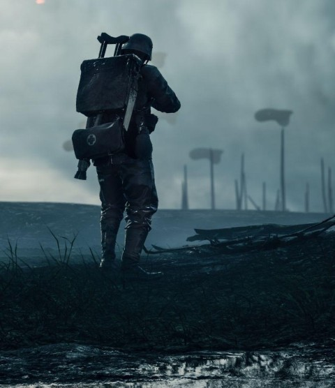

Explore the Machines That Changed History
Discover the tanks, aircraft, and ships that shaped World War I and influenced modern transportation and engineering.
Begin ExploringVehicles from World War I

Discover the tanks, aircraft, and ships that shaped World War I and influenced modern transportation and engineering.
Begin ExploringWorld War I (1914–1918) was a global conflict that involved many of the world's major powers and introduced new forms of industrialized warfare. Traditional tactics often resulted in stalemates, particularly along the Western Front where trench warfare dominated the battlefield. To overcome these challenges, nations invested heavily in new technologies and vehicles designed to improve mobility, communication, reconnaissance, and firepower.
Land vehicles such as tanks and armored cars were developed to cross difficult terrain and break through enemy defenses. Aircraft were used for reconnaissance, artillery spotting, and eventually aerial combat, giving armies valuable information about enemy movements. At sea, battleships, destroyers, and submarines played critical roles in protecting supply routes, enforcing blockades, and challenging enemy naval power. These wartime innovations not only influenced the outcome of the war but also laid the foundation for many transportation and engineering technologies used in civilian life today.
Learn how wartime engineering accelerated the development of engines, communication systems, and vehicle design.
See how military vehicles inspired modern automobiles, aircraft, shipping, and transportation networks.
Discover how vehicles changed military strategy and shaped future conflicts.